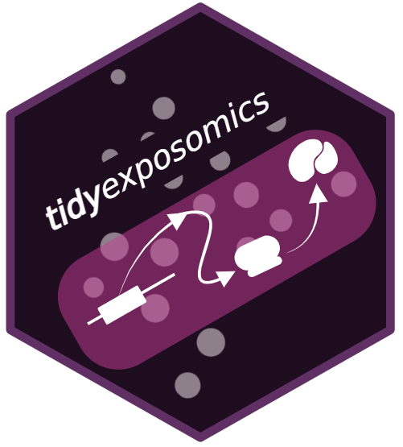

tidyexposomics 
Overview
The tidyexposomics package is designed to facilitate the integration of exposure and omics data to identify exposure-omics associations. Functions follow the tidyverse framework, where commands are designed to be simplified and intuitive. The tidyexposomics package provides functionality to perform quality control, sample and exposure association analysis, differential abundance analysis, multi-omics integration, and functional enrichment analysis.

Command Structure
To make the package more user-friendly, we have named our functions to be more intuitive. For example, we use the following naming conventions:

Results can be added to the MultiAssayExperiment object or returned directly with action = 'get'. We suggest adding results, given that pipeline steps are tracked and can be output to the R console, plotted as a workflow diagram, or exported to an excel worksheet.
Installation
The tidyexposomics package depends on R (>= 4.5.0) and can be installed using the following code:
# Install using Bioconductor
BiocManager::install("tidyexposomics")
# Install using devtools
devtools::install_github("bionomad/tidyexposomics")